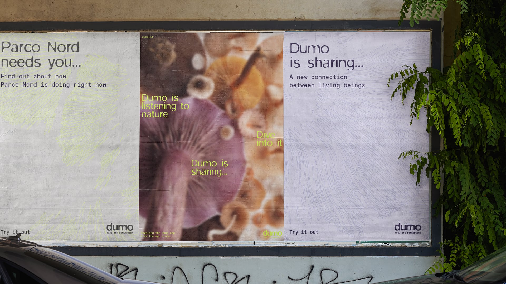
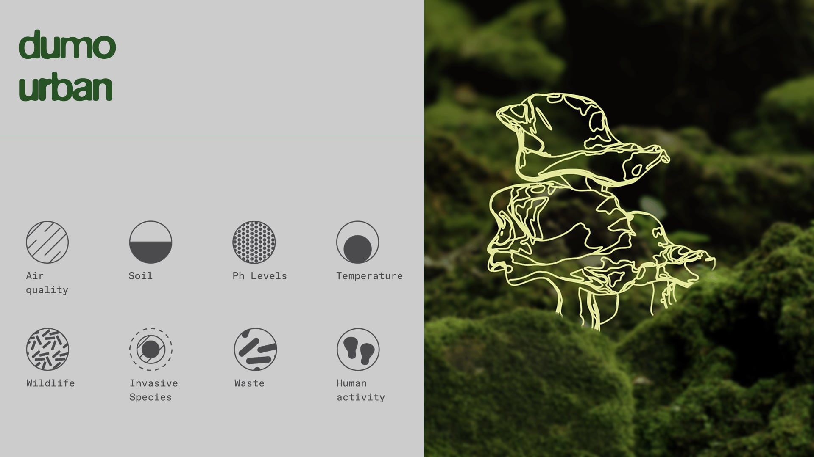
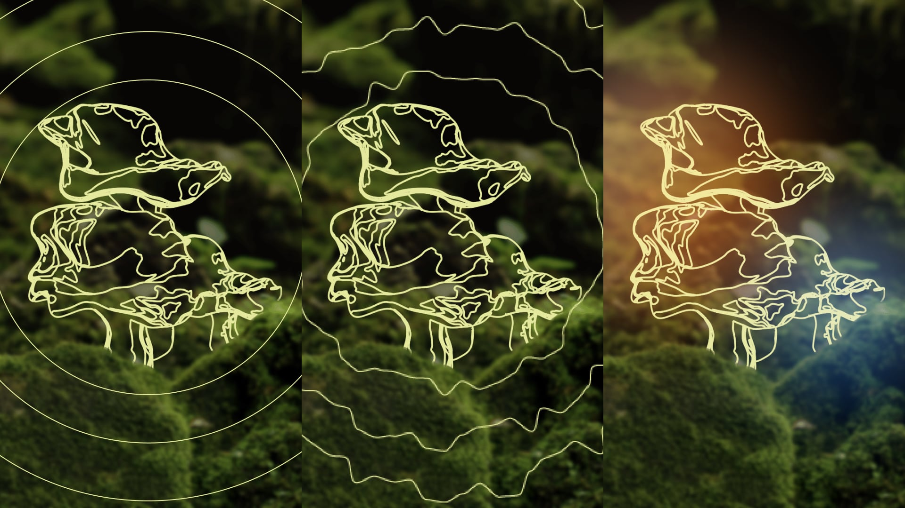
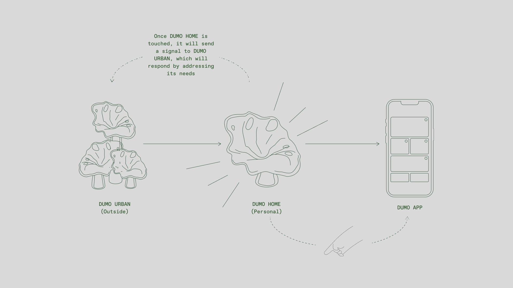
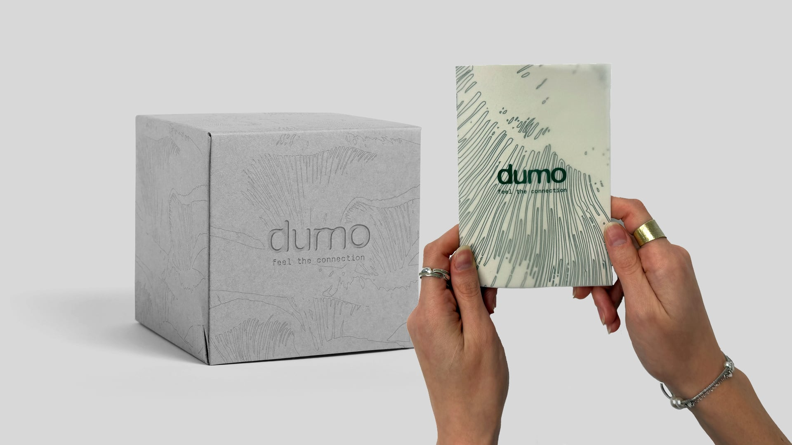
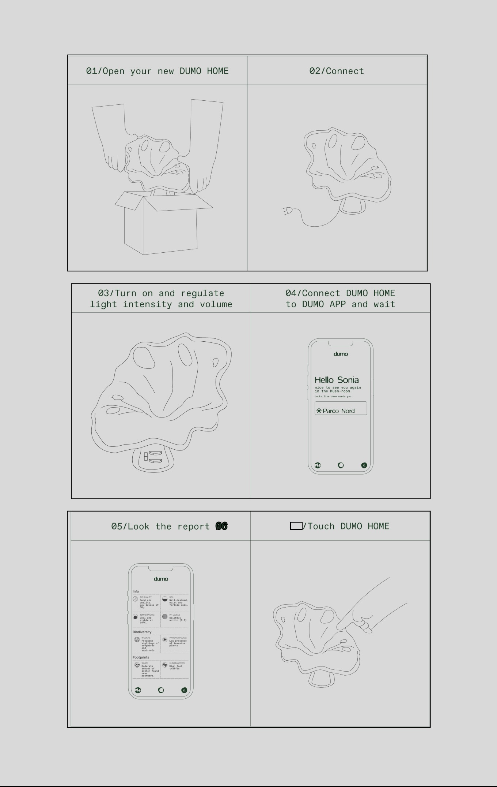
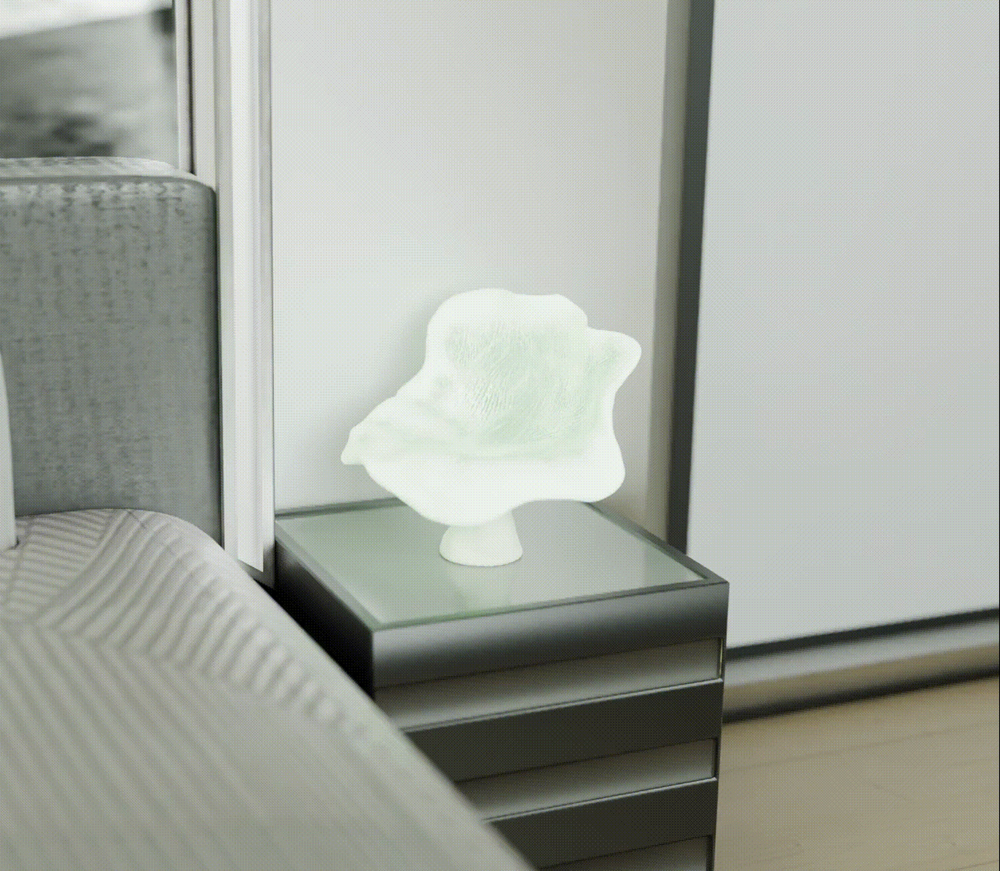

Concept development within the Anthropology of Communication course, interaction design for a
physical–digital system, and definition of non-human–human communication dynamics.
DUMO is a speculative project that explores a possible mindful coexistence between
human and non-human beings. The project challenges an anthropocentric view of the world, proposing
an ecosystem in which all forms of life share the same level of importance and are deeply interconnected.



DUMO is composed of a network of outdoor sensors located in urban green areas, a
mushroom-shaped domestic device, and a mobile application. The home device acts as a
bridge between nature and humans,
receiving environmental data and translating it into light, sound, and tactile signals.

The device communicates through an abstract language made of light, sound, and vibration,
and is responsive to human touch. This bidirectional interaction allows nature to send messages to humans
and humans to respond, fostering empathy and sensitivity toward the environment.



The DUMO app supports the user by translating abstract signals into clear textual information.
Through a bio-inspired interface, users enter a digital community where they can monitor environmental
health, receive requests for help, and actively participate in the DUMO ecosystem.